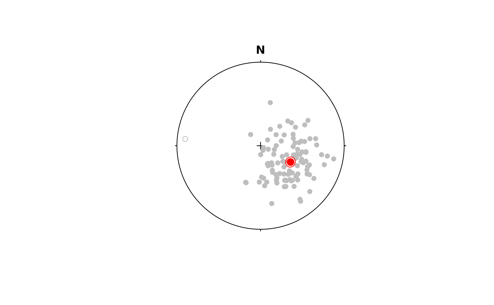

Circle of angular radius \(\alpha\) (degrees) around the mean vector \(\mu\).
See also
Other confidence:
bingham_confidence(),
bingham_ellipse(),
confidence_ellipse(),
stereo_confidence()
Examples
set.seed(20250411)
x <- rvmf(n = 100, Line(120, 55), k = 10)
mu <- sph_mean(x)
alpha <- sph_confidence_angle(x)
r1 <- fisher_confidence(mu, alpha = alpha)
plot(x, col = "grey")
points(mu, col = "red", pch = 16, cex = 1.5)
stereo_confidence(r1, col = "red")
